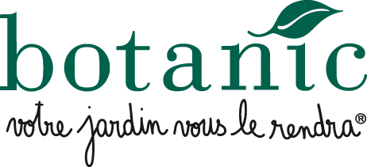

홈 > 브랜드 매거진 > 정육각
정육각
정육각은 도축 후 짧은 기간 안에 정육을 직배송하는 초신선 콘셉트로 출발한 한국의 신선식품 D2C 푸드테크 스타트업이다. 돼지고기를 핵심으로 소고기·닭고기·달걀·우유·수산물까지 품목을 넓혔고, 정보기술과 생산 자동화를 결합해 신선도를 차별점으로 내세웠다. 2022년 친환경 식품 유통 기업 초록마을을 인수해 외형을 키웠으나 이후 경영이 악화돼 2025년 기업회생 절차에 들어갔다.
산업 분야 리테일·커머스 · 공개 등급 자료 기반 · 브랜드 평가 4.1 ★
한눈에 보는 브랜드
정육각은 도축 후 짧은 기간 안에 정육을 직배송하는 초신선 콘셉트로 출발한 한국의 신선식품 D2C 푸드테크 스타트업이다. 돼지고기를 핵심으로 소고기·닭고기·달걀·우유·수산물까지 품목을 넓혔고, 정보기술과 생산 자동화를 결합해 신선도를 차별점으로 내세웠다.
2022년 친환경 식품 유통 기업 초록마을을 인수해 외형을 키웠으나 이후 경영이 악화돼 2025년 기업회생 절차에 들어갔다.
브랜드 관점
정육각의 핵심은 도축 후 최단 기간에 소비자에게 정육을 보내는 초신선 직배송과 이를 떠받치는 기술이다. 원물 재고를 최소화하는 적시생산 체계와 실시간 신선식품 수요 예측 알고리즘, 공장 자동화를 결합해 주문에 맞춘 온디맨드 생산을 구현했다.
2022년에는 매출이 수백억원 규모이던 시기에 약 900억원을 들여 자사보다 큰 친환경 유통 기업 초록마을을 인수해 화제가 됐다.
시작과 성장
정육각은 2016년 2월 김재연이 설립했다. 한국과학영재학교를 거쳐 카이스트에서 응용수학을 전공한 그는 미국 유학을 앞두고 짧게만 해보려던 돼지고기 판매를 본업으로 삼았다.
친구들과 모은 자본금 500만원으로 안양에 작업 공간을 마련해 시작했고, 직접 고기를 손질해 온라인으로 팔며 도축 후 1~4일 이내라는 초신선 정육 직배송 개념을 시장에 알렸다.
브랜드 아이덴티티
정육각은 신선도를 브랜드의 중심 가치로 내세운다. 갓 도축·생산한 식재료를 빠르게 전달한다는 의미에서 초신선이라는 표현을 핵심 메시지로 삼았고, 수학·코딩 배경의 창업자가 만든 기술 기반 식품 브랜드라는 정체성을 강조한다.
제품과 서비스
정육각은 돼지고기를 시작으로 소고기, 닭고기, 당일 산란 달걀, 우유, 수산물 등으로 초신선 품목을 확장했다. 도축이나 생산 직후 빠르게 손질·배송하는 신선 정육과 축산·신선식품이 주력이며, 초록마을 인수 이후에는 친환경·유기농 식품 영역까지 취급 범위를 넓혔다.
현재 상태
정육각은 초록마을 인수 이후 손실이 누적돼 2025년 7월 서울회생법원에 기업회생 절차를 신청했다. 이후 회생계획 인가 전 인수합병 방식으로 새 주인을 찾는 매각 절차가 진행됐다.
타임라인
정리된 연도형 이벤트가 없습니다.
BI/CI 변천사
확인된 BI/CI 이미지가 아직 없습니다.
함께 읽을 브랜드
29CM는 감도 높은 취향을 내세운 한국의 온라인 셀렉트숍이다. 최저가 경쟁 대신 브랜드 스토리와 큐레이션을 앞세워 2030 세대의 라이프스타일 소비를 겨냥한 콘텐츠...
필스 파이니스트(Phil's Finest)는 닭고기 소시지와 다진 소고기 등 육가공 제품을 만드는 미국 식품 브랜드로, 신선육에 채소를 섞어 친환경 소비를 내세운다....
 리테일·커머스 · 매거진 완성유니클로
리테일·커머스 · 매거진 완성유니클로유니클로는 패션을 유행의 장식이 아니라 생활을 구성하는 공산품처럼 다룬다. 브랜드의 힘은 화려한 스타일보다 베이직, 품질, 가격, 운영 시스템을 일관되게 정렬하는 데...
그라자(Graza)는 미국의 D2C 올리브오일 브랜드로, 2022년 1월 출시 이후 밝은 녹색의 짜는 스퀴즈 보틀과 단일산지 스페인 올리브오일로 빠르게 성장한 식품...
 리테일·커머스 · 자료 기반컬리
리테일·커머스 · 자료 기반컬리컬리(Kurly)는 마켓컬리를 운영하는 한국의 온라인 신선식품 기업으로, 새벽배송 '샛별배송'을 개척했다.

리테일·커머스 · 자료 기반Botanic보타닉(Botanic)은 친환경 정원용품·반려동물·유기농 식품을 취급하는 프랑스의 가든센터 체인이다.
아마존은 쇼핑몰보다 고객의 기다림과 탐색 비용을 줄이는 시스템 브랜드에 가깝다. 상품 범위, 검색, 추천, 배송, 결제 경험이 하나로 연결되면서 브랜드의 가치는 편리...
Best of the Bone는 2025년에 기록된 Shoppy Shop Brands 계열의 브랜드 아이덴티티 사례입니다. Universal Favourite가 아이...